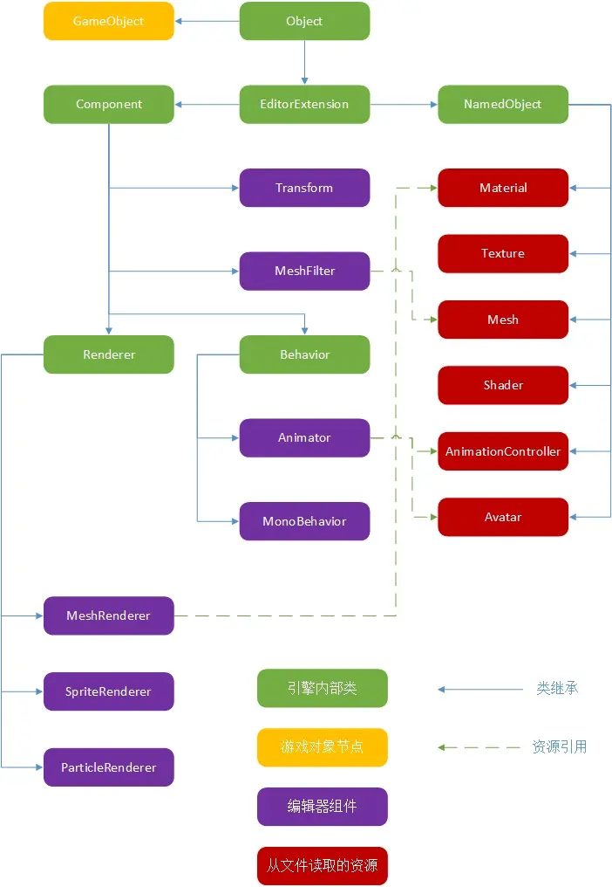

Unity
AI 导读一分钟导读，先掌握全文主干。
核心观点
- Unity 基础：场景、GameObject、组件与 C# 脚本
- UI 系统（UGUI）与常用组件
- 打包发布（Android/PC）配置要点
关键结论与取舍
- 一切皆组件（Component）思想是 Unity 第一课
- UI 与场景规范从项目开始就定好，后期返工成本高
清除启动界面工程
cd /Users/<yourUserName>/Library/Preferences/
cat com.unity3d.UnityEditor5.x.plist
defaults read com.unity3d.UnityEditor5.x.plist
defaults delete com.unity3d.UnityEditor5.x "RecentlyUsedProjectPaths-0"打印调用堆栈
string trackStr = new System.Diagnostics.StackTrace().ToString();
Debug.Log ("Stack Info:" + trackStr);注意：StackTrace 只反映当前线程；Release 构建缺少调试符号时行号可能不可用。
积累
- Unity 引擎主循环是单线程模型，子线程里没法直接调用 Unity SDK（可以用主线程调度队列绕行）
- 主循环单线程，游戏脚本 MonoBehaviour 遵循严格的生命周期（Awake / OnEnable / Start / Update / OnDestroy）
- 倾向用 time slicing（时间分片）的协程（coroutine）完成异步任务
组件图
graph TB
GO[GameObject] --> C1[Transform
GO --> C2[MeshRenderer]
GO --> C3[Collider]
GO --> C4[自定义脚本
: MonoBehaviour] C4 --> AWAKE[Awake()] C4 --> START[Start()] C4 --> UPDATE[Update()] style GO fill:#333,stroke:#fff,color:#fff style C4 fill:#ff7f00,stroke:#fff,color:#fff
: MonoBehaviour] C4 --> AWAKE[Awake()] C4 --> START[Start()] C4 --> UPDATE[Update()] style GO fill:#333,stroke:#fff,color:#fff style C4 fill:#ff7f00,stroke:#fff,color:#fff

常见热更方案
2026 现状：C# 反射动态加载已被 iOS 审核和 IL2CPP 限制淘汰；主流热更组合是 HybridCLR（IL2CPP 解释器补丁）+ xLua（逻辑层）+ Addressables（资源层）。
利用c#反射，动态加载程序集，实现代码更新
// 从指定网址下载
Assembly assembly = Assembly.LoadFile(assemblyFile);创建Lua虚拟机，动态加载Lua脚本
-
XLua.LuaEnv luaenv = new XLua.LuaEnv(); luaenv.DoString("CS.UnityEngine.Debug.Log('hello world')"); luaenv.Dispose(); -
LuaState lua = new LuaState(); lua.Start(); lua.DoString("print('hello world')"); lua.Dispose();
Unity 更新（2024-2026）
Unity 6（2024-10 LTS，版本号策略改为以 6 为主版本）的主要变化：
- 渲染：URP / HDRP 管线持续改进，Shader Graph 在性能和内存上大幅优化。
- WebGPU 进入实验性支持（编辑器和运行时）。
- AI 工具：AI Navigation（自动寻路烘焙）组件化落地，Muse 等生成式 AI 工具并入订阅。
- Runtime Fee 计划因开发者强烈反对而全面撤销，恢复订阅制。
- 组织层面：2023-10 CEO 约翰·里奇蒂耶洛离任，2024 年经历多轮裁员（累计约 25%）。
- 热更趋势：HybridCLR（原 huatuo）成为补丁方案主流，资源侧配合 Addressables。